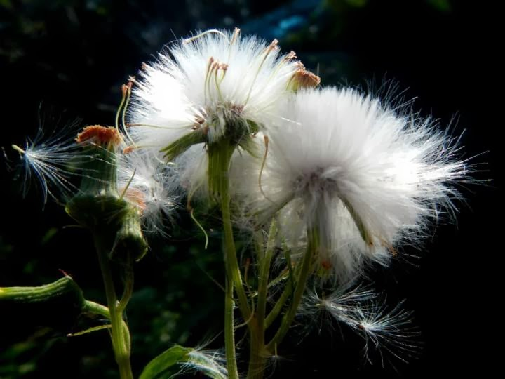

[Photos] 爸爸的攝影教室 - 蒲公英的拍攝方法
 |
| 老爸的蒲公英傑作 |
最近和父親與母親一起到田野間練拍。一到鄉間田野，大家各自拿著相機忙著拍照，忙著拍花的，淨往花叢間鑽去。而忙著捕捉小昆蟲蹤跡的，扮演起福爾摩斯，仔細尋找小昆蟲的蹤跡。雖然，拍照時沒時間好好切磋，事後，在分享彼此的照片時，總會有著不一樣的驚喜。近日，父親大人就在臉書上貼了一張，在大太陽底下拍攝的白色蒲公英照片（Post by Rene Wangritte）。有趣的是雖然在田野間又是在大太陽底下拍攝，可是蒲公英的背景卻是全然的黑色，就像是在攝影棚內拍攝一般。照片裡高反差造成細緻的光影對比， 形成一張主題明顯，相當有特色的照片（註）。
這張照片，當然引起我的興趣，馬上追問父親大人，這張照片倒底是用什麼技巧拍攝的。在父親大人的詳細解說下，才知道用的技巧相當簡單。第一：逆光拍攝，第二：對著蒲公英亮點點測光。
為了馬上實踐父親大人的教學，我和母親各自拿著自己的相機，終於有個機會在光天化日（咦？）之下逮到蒲公英。我們三人，難得肩碰肩，一起圍繞在蒲公英旁邊，一致將相機朝向陽光，努力捕捉蒲公英隨風飄曳的身影。
雖然只有簡單兩點，可是親自操作起來好像也沒這麼簡單。下面這張，就是學生一號，母親大人的作品。相機是普通的傻瓜相機，Nikon Coolpix aw100。
|  |
| 學生一號（母親大人）的作品 |
{kind=link}
雖然沒有背景全黑，但是也相當成功呀！小傻瓜造成的反差效果雖然沒有單眼這麼大，但是，整株蒲公英毛茸茸的，有點像沒睡飽的貓熊寶寶的毛髮，卻也相當可愛。其次因為傻瓜相機（point and shoot）的測光方法都是自動的，所以後來和父親大人討論過後， 覺得應該只要對著逆光拍攝，確定相機的自動對焦是落在蒲公英上即可，使用怎麼樣的測光方式，好像不是這麼重要。所以，使用傻瓜相機的攝影玩家們，請趕快拿起妳們的傻瓜相機試試吧！（或許智慧型手機也可以喔！如果使用智慧型手機成功的，請留言並附上讓人驚艷的蒲公英照片吧！）
 |
| 學生二號（我） 的作品 -背景還不是很黑呀！ |
 |
| 學生二號（我）的作品 – 呼！背景終於黑掉了！ |
接下來就是我的兩次還可以看的嘗試啦！第一次好像沒有很正對陽光，所以背景還有些許亮光。拍攝時，把光圈開到最大，讓背景模糊，因為是大光圈又是逆光的原因，所以光暈成很漂亮的圓形，算是意料之外的美麗了。
第二次，終於橋對位置，背景全黑囉！順便感謝母親大人很努力地為我們製造蒲公英飄散的效果。雖然成功完成在光天化日之下讓背景全黑的蒲公英獨照，可惜美中不足的地方還是很多，比如說選擇對焦位置還是不能掌控的很好（我可以怪我相機的自動對焦系統嗎？！），只能說能進步的空間還是很大囉～
 |
| 來張直的！ |
為了拍這張蒲公英，在草叢間蹲坐的時間真的很久。我都開始懷疑，是否也躲藏在草叢裡的青蛙，開始覺得我占著它的位置太久，呱呱叫著表示抗議呢。為了補償，我在草叢和陽光以及對焦系統抗戰許多，所以就很厚臉皮的又貼了一張直幅的蒲公英了！
最後，請大家有空一定要拿著相機對著陽光拍拍看看呀，真的很有趣呢！
註：父親使用的相機是 Pentax KX，我的則是 Sony Nex 5N